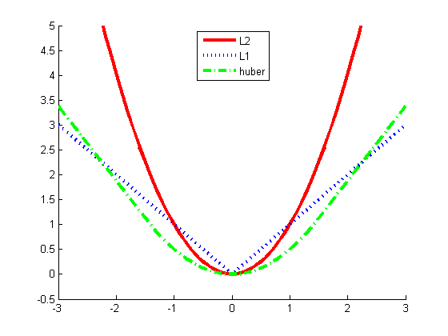

% Plot the Huber loss fn compared to L1 and L2 % cf Hastie book 2e p350 err = -3:0.1:3; L1 = abs(err); L2 = err.^2; delta = 1.5; ind = abs(err) <= delta; huber = 0.5*ind .* (err.^2) + (1-ind) .* (delta*(abs(err)-delta/2)); vapnik = ind .* 0 + (1-ind) .* (abs(err) - delta); figure; hold on plot(err, L2, 'r-', err, L1, 'b:', err, huber, 'g-.',... err, vapnik, 'c--', 'linewidth', 3); legend('L2','L1','huber','vapnik') printPmtkFigure('huberLoss')